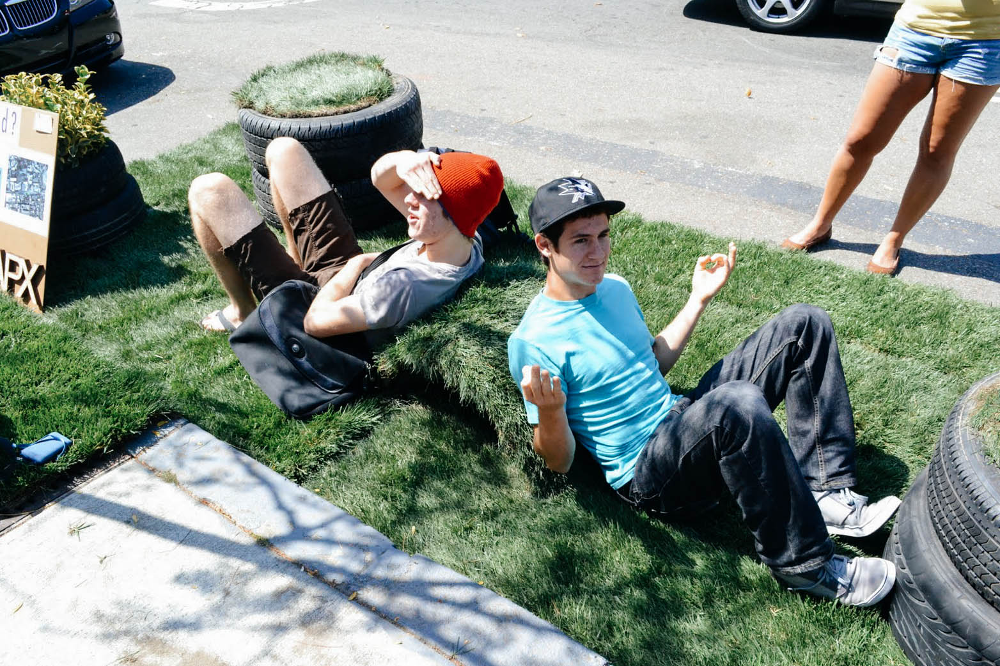
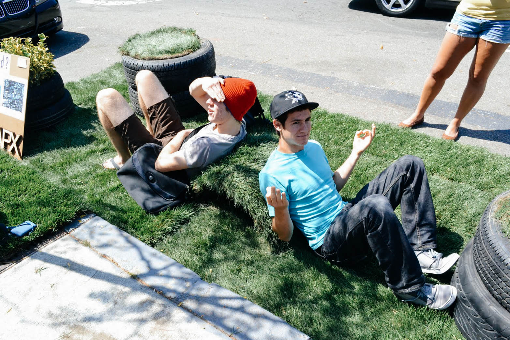
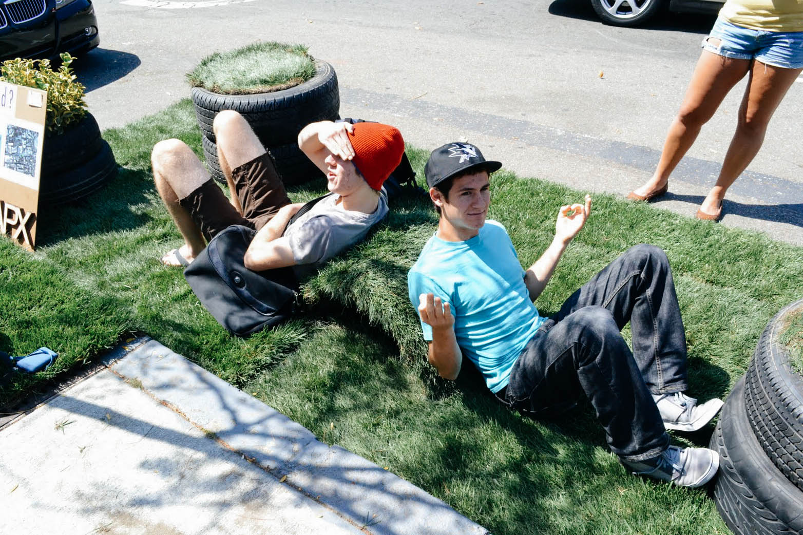

TIRE(d)?, aptly titled both as a play on the material used and as an invitation to take pause in our space, is designed as a simple, sustainable, and adaptable intervention, designed within the constraints of a metered municipal parking space.
With old tires sourced from a local junkyard, we were able to sculpt mounds for seating, house potted plants, and add dimensionality to an otherwise at surface. The tires also bring attention to the waste produced by our car-oriented society and present a creative alternative for reuse.
The installation engages viewers with exposure to current methodologies of positively disrupting the urban landscape, encouragement to question preconceptions of social urbanism, and empowerment to start a dialogue of their own.
